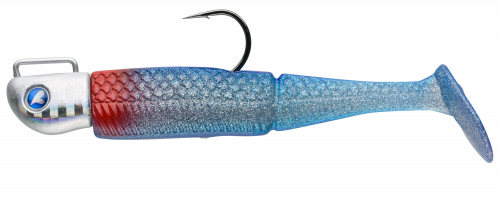

クリルン
（Qrilun）
クリルン（Qrilun）はBlueBlue（ブルーブルー）のライトゲーム用ワームです。
ブルーブルーのメバル用プラグ「アミコン」の爆発的な釣果から導き出した強い水押し設計を、ワームに落とし込んだ1.7インチ。水押しの強い“ファットI字アクション”と、生き物のような浮遊感で食い渋るメバルに口を使わせるのが最大の魅力です。

画像出典:ブルーブルー公式HP
スペック
- メーカー
- BlueBlue（ブルーブルー）
- タイプ
- ワーム（ジグヘッドリグ）
- サイズ
- 1.7インチ
- 入数
- 8本
- ターゲット
- メバル・アジなどライトゲーム全般
- 価格
- 715円（税込）
- 発売
- 2026年
▼今すぐチェック

クリルンの特徴
「ピンテールでは弱く、シャッドテールでは強すぎる」その“間”を埋めるファットI字ワーム
-
水押しの強い“ファットI字アクション”
ジグヘッドの釣りに最適化した、ウォブリングもローリングもしない水押しの強いI字アクション。適度な水抵抗でレンジ感や潮受け感が分かりやすく、誰でも簡単にレンジキープできる。
-
ボールテールによる2ウェイアクション
シャッドテールとピンテールの中間を狙ったボールテールを採用。通常の巻き速度ではほぼ動かずテールの後ろで渦を巻き、巻き速度の変化や強い潮に当たるとブルブルとバイブレーションする。動きのON／OFFを釣り人側で使い分けられる。
-
もっちりボディと3本の触手で見切らせない
尺ヘッドDタイプと合わせた時のダートのキレも考えた、ちょい硬めのもっちりマテリアル。藻やボトムの上に置いた時は、メインテール下の3本の触手が細かく揺れて見切らせない最後の一手になる。
クリルンの使い方
基本はジグヘッドに付けてただ巻き。ファットボディのおかげでリグの位置が分かりやすいので、カウントダウンでレンジを決めたら一定層をゆっくり巻いてくる。
反応がない時は巻き速度に変化をつけたり、ロッドで強めのアクションを入れたりしてテールをバイブレーションさせ、任意のタイミングで魚にスイッチを入れる。潮のヨレやスリットの払い出し、ボトムのシモリなどに投げ込んで、ドリフトや置きの釣りで触手を揺らすのも有効です。
クリルンの得意な状況
魚はいるのに浮ききらず、食いも渋いという状況が最大の出番。
プラグでは引きにくい場所や、アミ（プランクトン）を捕食しているメバルに、ゆっくりした一定層の巻きで口を使わせたい場面で選びたい1本です。
浮ききらない食い渋りのメバルでも、ゆっくりした巻きで釣れる場面が増えます。
ワンポイント
まずはただ巻きからスタートし、反応がなければ巻きスピードを上げ下げしてテールのON／OFFを使い分けるのがコツです。
ダートさせたい時は、開発時に合わせて調整された尺ヘッドDタイプとの組み合わせがオススメです。
オススメカラー
クリルンは全11色展開。メバリングでオススメのカラーを厳選して紹介します。
 ブルーブルー
ブルーブルー
ブランド名を冠したブルー系。澄み潮やアミパターンの基準カラーに。
 ウォーターメロン
ウォーターメロン
ナチュラル系の定番。スレた魚や明るい時間帯に見切られにくい。
 パンプキングロー
パンプキングロー
グロー入りでナイトゲームのアピールに。暗い場所や濁りで存在感を出したい時に。
 一味唐辛子
一味唐辛子
赤系ラメのアクセントカラー。反応が落ちた時のローテーションに。
画像出典:ブルーブルー公式HP
▼今すぐチェック
クリルンに似ているルアー
-
 ジョルティmini
ブルーブルー
詳細はこちら＞
ジョルティmini
ブルーブルー
詳細はこちら＞
ジグヘッドワーム。同じクラスのサイズで、ローテーションの1本として。
-

ジョルムーア BlueBlue 詳細はこちら＞ジグヘッドワーム。同じクラスのサイズで、ローテーションの1本として。
-
 クラッシュシティ インフィルトレイター
ラパラ
詳細はこちら＞
クラッシュシティ インフィルトレイター
ラパラ
詳細はこちら＞
全長3mm・自重4.2gのワーム。ひと回り大きいシルエットで見せたいときに。